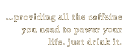
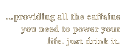

Мы с гордостью подаем освежающие напитки,
которые готовят наши друзья в гостевой Head First.
Охлажденный зеленый чай, $2.99
Охлажденный малиновый сироп, $2.99
Чудо-напиток из голубики, $2.99
Клюквенный антиоксидантный взрыв, $2.99
Чай «Льдинка», $2.99
«Подзарядка для мозга», $2.99
Starbuzz запускает… технологию «Чашка Tweet Sip»
Как и было обещано, сегодня я с гордостью объявляю, что кафе Starbuzz
запускает технологию «Чашка Tweet Sip» – это специальная чашка в кафе Starbuzz,
которая генерирует твит каждый раз, когда вы отпиваете из нее глоток!
Подробнее о нашем изобретении вы сможете узнать из моего видео.
Starbuzz обеспечивает поддержку социальных сетей
Here at Starbuzz we're embracing the social media craze.
In fact, we're going further than any of our competitors and
we're very close to announcing a revolutionary new product that
links your coffee drinking directly to your social
network. Forget "checking in"; we're going way beyond that, and
with this new product every sip of smooth, aromatic, hot Starbuzz
blend is going to to be shared with your social network.
Sound like science fiction? It's not; I'm already
testing our final prototype social network cup as I write this,
which links you, the drinker, right to your favorite social
networks. We've made a huge investment to make this happen
and we've created a reusable coffee cup complete with RFID,
NFC, Bluetooth, and Wifi (not to mention a few more things the tech
folks know about, because hey, I'm just the coffee guy).
So, keep your eyes out for this amazing new cup. And I'll
be releasing a video teaser soon to tell you all about this
new invention, straight from Starbuzz Coffee.
Starbuzz использует компьютерные науки
Have you ever noticed how efficient a Starbuzz Coffee
house is? The lines alway move fast, and despite the
astronomical number of different drinks any customer can
order, we have your drink up, hot (or cold if that's the
way you want it) and ready in seconds. How do we do it?
To pull this off, we take advantage of the latest and
greatest in computer science. In fact, we train
our staff to be one big distributed computer. The cashiers
create the orders for the distributed computer, complete
with your name and the drinks special instructions. Then
our specialized drink makers grab the next cup
and go about working on your order until it's finished.
With this design, we are able to horizontally scale our operation
any time we want. All we need to do is add more cashiers
and drink makers (not to mention a fair amount of support
staff you never see) as the customer flow grows.
Самый уникальный постоянный клиент месяца
Our most unique patron of the month award goes to a
customer in Poulsbo, Washington, whose daily morning order
is a "six-splenda, no-foam, 130-degree non-fat-soy latte,
with the splenda stirred in before the milk is added." Do we
have unique customers or what?
 
